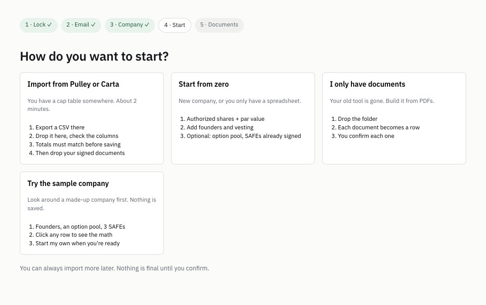
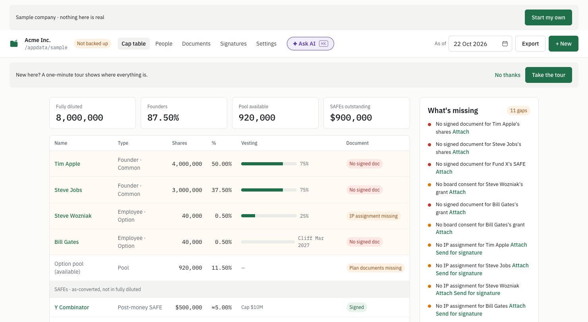
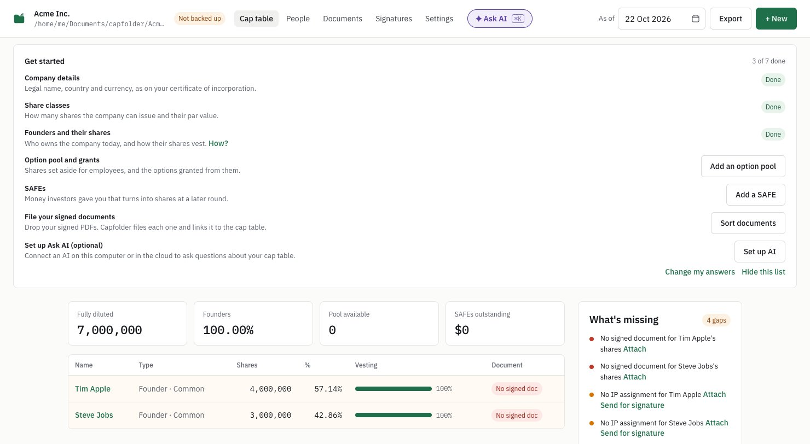
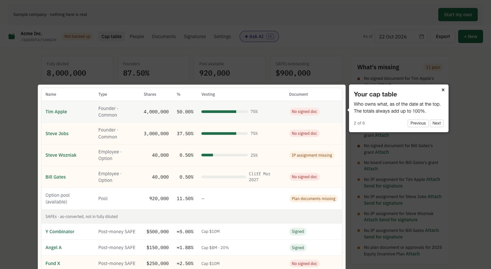

The technical version: a full article with canonical_url pointing at capfolder.com, 4 tags.
Before you post
Tue–Wed.
Wait until Google has indexed the original (Search Console → URL Inspection), usually 3–7 days.
Create the post in the Markdown editor: paste the front matter first, then the article. Upload each image with the editor's image button, because dev.to won't take local files.
published: false saves a draft; flip it when you're happy.
Front matter
---
title: Building a read-only demo mode into a local-first Tauri app
published: false
description: How Capfolder turned its golden test fixture into a sample company you can click around in, and why its checklist never stores a tick.
tags: opensource, tauri, react, showdev
canonical_url: https://capfolder.com/blog/try-it-on-a-sample-company/
cover_image: https://capfolder.com/blog/img/v013-sample.jpg
---
Capfolder is an open-source (AGPL) cap table app built with Tauri and React. Your cap table lives in a folder of plain files on your own computer: an append-only, hash-chained events.jsonl in the Open Cap Format, plus your signed PDFs.
That design made the first-run experience awkward. A new user opened an empty app and had to type in real share counts before seeing anything useful. In 0.1.3 we added a sample company, a self-ticking checklist and a tour. Here's how, in very little code.
1. The sample company is the test fixture
We already had a golden test company in fixtures/acme-vault/: the event log the engine must turn into an expected cap table CSV, to the share. The sample company is that same file. Vite's ?raw import bundles it as text, so no extra files ship:
import metaText from "../../../fixtures/acme-vault/capfolder.json?raw";
import eventsText from "../../../fixtures/acme-vault/events.jsonl?raw";
On first open it's copied into the app-data folder, with "sample": true added to capfolder.json. The event log is written last, so a half-made copy gets made again next time. Every document the events point to gets a one-page placeholder PDF from pdf-lib, so the Documents screen isn't full of "missing file" errors.

Alt text: Capfolder's How do you want to start? screen: Import from Pulley or Carta, Start from zero, I only have documents, and Try the sample company. · Download image
2. Read-only in one place
Every write in the app goes through the same append function, so read-only is one check there, not one per screen:
if (v.meta.sample) return [SAMPLE_BLOCKED];
// "This is the sample company, so nothing here is saved. Use Start my own to set up your company."
A banner on every screen says "Sample company · nothing here is real" with a Start my own button.

Alt text: The sample company Acme Inc. in Capfolder: a banner says Sample company, nothing here is real. 8,000,000 shares fully diluted, Tim Apple 50%, Steve Jobs 37.5%, two employee grants, the option pool, SAFEs, and a What's missing list with 11 gaps. · Download image
3. A checklist that never stores a tick
The Get started list has 7 steps. None of them is stored as done. Each one is worked out from the cap table state on every render:
The a.pool and a.safes come from three yes/no questions asked before setup. Unanswered means "show the step", so skipping the questions never hides anything.

Alt text: Capfolder's Get started list: 3 of 7 done. Company details, share classes and founders are Done; option pool, SAFEs, signed documents and Ask AI each have a button. · Download image
4. The tour
The tour is Driver.js (MIT) with six stops. skipMissingElement handles an empty company that has no holding row yet, and focus goes back to where it was when the tour closes.

Alt text: Capfolder's tour on the sample company: the cap table is highlighted with a popover, Your cap table, stop 2 of 6. · Download image
What it doesn't do yet
The sample is read-only, so you can't try e-signing in it: signing goes through a relay, and we don't want fake envelopes there.
The code is on GitHub. If you've built a demo mode for a local-first app, how did you keep it from drifting away from the real thing?